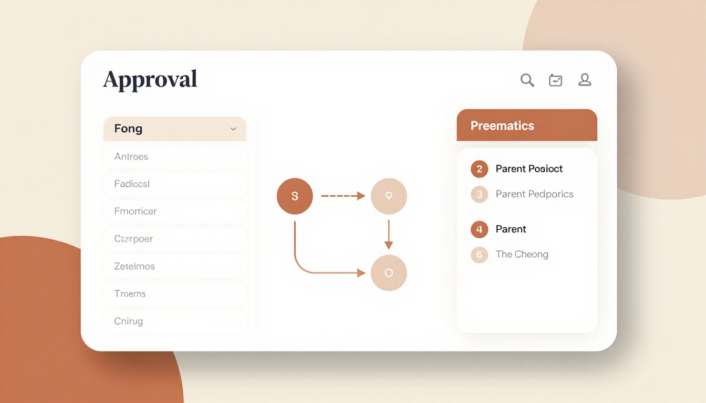
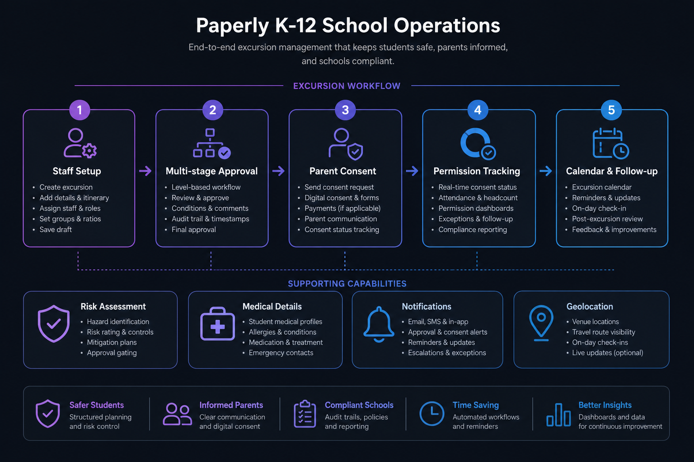
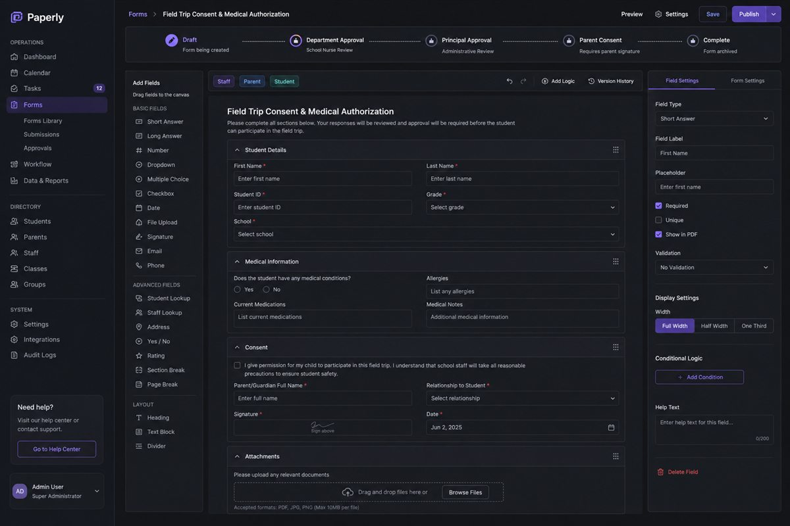
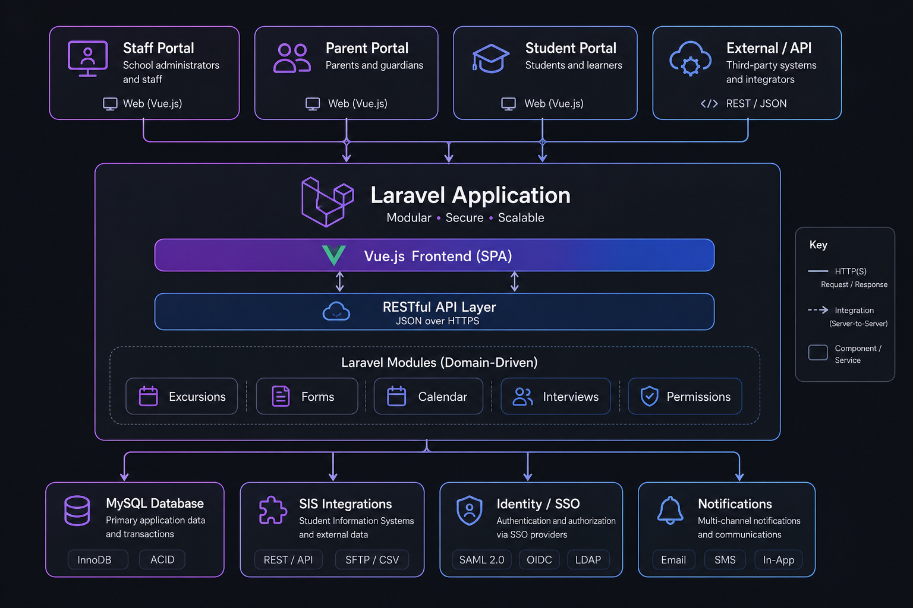

Paperly.
Making the complex work of running a school feel simpler. Digital excursions, dynamic forms, approvals and parent permissions for teachers and parents across Australia.
 Illustrative Paperly school operations interface — representative sample data.
Illustrative Paperly school operations interface — representative sample data.
Behind the build.
Paperly is a school management platform used by Australian schools to replace paper trails, manual spreadsheets and fragmented communication. The system coordinates complex school operations: multi-day excursions, parent consent, dynamic form builders, calendar events, medical tracking and parent-teacher interviews.
Schools need strict role-scoped workflows: teachers draft requests, heads of department approve them, finance checks budgets, and parents submit legally binding consent with emergency contact details.
Senior Developer Ownership
As Senior Web Application Developer working remotely with Paperly’s Perth-based engineering team, I took end-to-end responsibility for key platform modules from architecture to production deployments.
- Designed relational data schemas and Eloquent models for excursions, forms, permissions and scheduling.
- Built high-throughput REST APIs consumed by Vue.js staff, parent and student portals.
- Implemented multi-step approval workflows with audit logs and automated email/SMS reminders.
- Handled regular production releases, hotfixes, data migrations and cross-time-zone team collaboration.
Core Platform Workflows
- Digital Excursions: Complete planning workflows with risk assessments, transport booking, student rosters, medical alerts and parent permission tracking.
- Dynamic Form Builder: Configurable form engine supporting custom field types, conditional logic, multi-stage approvals and exportable responses.
- Parent Approvals & Consent: Mobile-friendly portal where parents review excursion details, confirm medical data, and provide digital sign-off.
- Calendars & Parent-Teacher Interviews: Time-slot scheduling engine preventing booking conflicts for hundreds of families.
Modular Laravel & Vue Architecture.
Role-scoped web portals share a unified modular Laravel backend, managing school-scoped databases, external Student Information System sync, and notification dispatch.
Architectural diagram: Role portals interface through modular Laravel endpoints with MySQL, SIS abstraction, SSO identity, and queued notifications.
School Ecosystem Sync
School data sync is abstracted behind a clean adapter interface so platform modules run consistently against different SIS/LMS platforms. Supported ecosystem integrations include:
- Synergetic & TASS: Bi-directional student enrolment, parent contact and timetable synchronization.
- Veracross, SEQTA & Schoolbox: Class rosters, medical flags and teacher scheduling.
- Microsoft Identity & Wonde: Enterprise single sign-on (SSO) and automated identity federation.
Data Protection & Roles
School environments demand strict privacy boundaries. Medical details, consent slips, and dietary restrictions are isolated with per-school tenant safeguards:
- Role-scoped permissions ensuring teachers only access assigned student cohorts.
- Encrypted storage for sensitive parent declarations and medical documents.
- Detailed audit trail tracking who viewed, approved, or modified operational records.
Interfaces Built for Everyday School Ops.




Technology & Tooling.
Four years of stable senior engineering delivery on a live multi-school education SaaS. Modules are used daily by thousands of teachers and parents across Australia, with Paperly publicly reporting 250+ schools joining for 2026 and beyond.